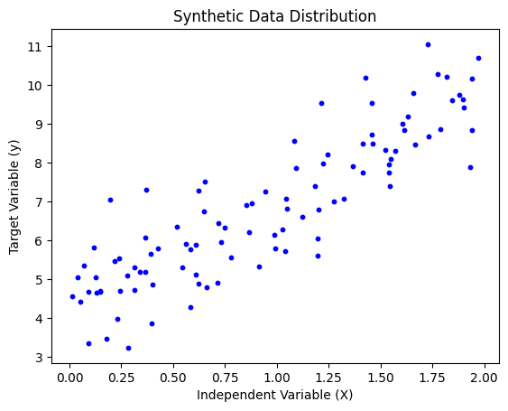
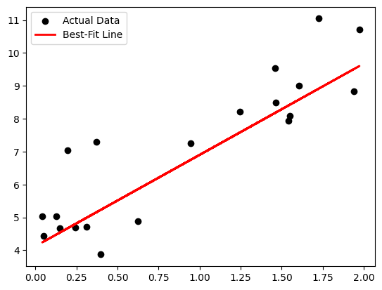

Code
import numpy as np
import matplotlib.pyplot as plt
from sklearn.linear_model import LinearRegression
from sklearn.model_selection import train_test_split
This notebook demonstrates a simple Linear Regression model using scikit-learn. The goal is to predict a continuous target variable by fitting a straight line through synthetic data.
We’ll use numpy for data generation, matplotlib for visualization, and scikit-learn for the model.
import numpy as np
import matplotlib.pyplot as plt
from sklearn.linear_model import LinearRegression
from sklearn.model_selection import train_test_splitWe’re creating a dataset where \(y = 4 + 3x + \text{noise}\). * X: Our independent feature. * y: Our target variable (what we want to predict).
# Seed for reproducibility
np.random.seed(42)
# Generate 100 data points
X = 2 * np.random.rand(100, 1)
y = 4 + 3 * X + np.random.randn(100, 1)
# Split into Training and Testing sets
X_train, X_test, y_train, y_test = train_test_split(X, y, test_size=0.2)Before modeling, it’s always smart to see what we’re working with. We are looking for a linear trend.
[Image of a scatter plot showing a linear relationship with noise]
plt.scatter(X, y, color='blue', s=10)
plt.xlabel("Independent Variable (X)")
plt.ylabel("Target Variable (y)")
plt.title("Synthetic Data Distribution")
plt.show()
We initialize the LinearRegression object and “fit” it. This is where the model calculates the optimal slope and intercept.
Note: The model is trying to solve the equation \(y = mx + b\). The Coefficient is your slope (\(m\)), and the Intercept is your constant (\(b\)).
model = LinearRegression()
model.fit(X_train, y_train)
# Print the results
print(f"Intercept: {model.intercept_[0]:.2f}")
print(f"Coefficient: {model.coef_[0][0]:.2f}")Intercept: 4.13
Coefficient: 2.77Now we use our “Test” data to see how the model performs on information it hasn’t seen yet.
y_pred = model.predict(X_test)
plt.scatter(X_test, y_test, color='black', label='Actual Data')
plt.plot(X_test, y_pred, color='red', linewidth=2, label='Best-Fit Line')
plt.legend()
plt.show()
To know if our model is actually “good,” we use specific metrics to measure the distance between our predictions (\(\hat{y}\)) and the actual values (\(y\)).
from sklearn.metrics import mean_absolute_error, mean_squared_error, r2_score
# Calculate metrics
mae = mean_absolute_error(y_test, y_pred)
mse = mean_squared_error(y_test, y_pred)
rmse = np.sqrt(mse) # RMSE is just the square root of MSE
r2 = r2_score(y_test, y_pred)
print("--- Model Performance ---")
print(f"Mean Absolute Error (MAE): {mae:.4f}")
print(f"Root Mean Squared Error (RMSE): {rmse:.4f}")
print(f"R-squared (R²): {r2:.4f}")--- Model Performance ---
Mean Absolute Error (MAE): 0.8400
Root Mean Squared Error (RMSE): 1.0821
R-squared (R²): 0.7513Now that we have our metrics, let’s break down the “vibe” of our model: